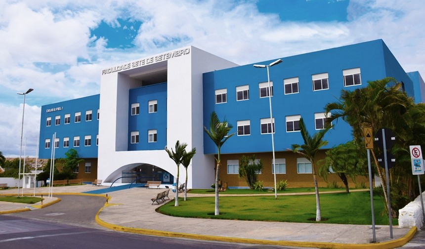

A história do centro Universitário do Rio São Francisco - UniRios, tem início no distante ano de 1964, quando o professor Gilberto Gomes de Oliveira , pioneiro da educação, criou o Colégio Sete de Setembro, e estabeleceu um novo padrão na oferta de serviços educacionais em Paulo Afonso (BA) e região.
Deste projeto, nasceu o sonho de criar uma faculdade que oportunizasse uma formação de nível superior de qualidade e referência. Tendo em vista que muitos jovens precisavam mudar para outros municípios ou capitais para estudar.
Firme neste propósito, mesmo diante de muitos desafios, foi criada em 1º de abril de 2002 a Faculdade Sete de Setembro - Fasete . Ao longo de 17 anos de história, completos em 2019, a instituição viveu momento sempre ascendente. Com o mesmo propósito: ofertar ensino superior de qualidade para a região do sertão do São Francisco.
Até 2019, a instituição ofertava dez cursos de graduação, sendo eles: Administração, Biomedicina, Direito, Educação Física (Licenciatura ou Bacharelado), Enfermagem, Letras, Odontologia, Psicologia e Sistemas de Informação.
Atento à crescente demanda por formação em diferentes carreiras, a organização pleiteou junto ao Ministério da Educação tornar-se Centro Universitário, condição que permitiria maior autonomia na criação de cursos.
A confirmação foi anunciada no dia 21 de outubro , através do Diário Oficial da União, Portaria nº 1.789/MEC que transformou a Faculdade Sete de Setembro no Centro Universitário do Rio São Francisco – UniRios.
Assim, instituição ganhou uma nova identidade, passando a carregar o Rio São Francisco como marca que tão bem caracteriza a região, enriquecendo ainda mais o legado educacional das iniciativas pioneiras do saudoso professor Gilberto Gomes de Oliveira.